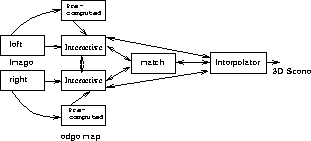

Our stereo integration model is depicted in Figure 2. As
seen from the figure there is feed forward as well as feedback (strong) interaction
among the following modules: the interactive left and the right edge detectors, the
matching module, and the interpolation module. There is only feedforward (weak)
interaction between the precomputed edge map and the interactive edge detectors. The
interaction model structure is analogous
to Clark and Yullie's [24] recurrent interactive model, except that
we also have strong interaction with the interpolation module.
Interaction between modules is achieved through line fields, which also
facilitates preserving discontinuities in the reconstructed surface. In the
multiresolution framework, Figure 2
represents the interaction
model at any given resolution  . The specifics of the interaction
achieved between different modules is explicated in Section 4.
Though we use line fields (edges) for interaction in this paper, it is
concieveable to use some other feature amenable to interaction.
. The specifics of the interaction
achieved between different modules is explicated in Section 4.
Though we use line fields (edges) for interaction in this paper, it is
concieveable to use some other feature amenable to interaction.

Figure 2: The Integration Model